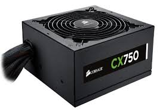

Nätaggregat

Nätaggregatet är datorns strömförsörjning. Den förser alltså datorns
delar med ström. Hur kraftfullt nätaggregat du behöver beror på komponenterna
i din dator.
Helst så vill man att nätaggregatet ska ha lite högre effekt än vad som egentligen behövs så att man är helt säker på att alla delar får tillräckligt med ström. När man ska köpa sitt nätaggregat behöver man alltså ha koll på hur många watt komponenterna drar. Ett vanligt nätaggregat ligger normalt på ca 500-700W.
Ett bra nätaggregat har en hög verkningsgrad. Ett nätaggregat kan vara märkta med olika märken för att visa hur bra verkningsgrad de har. Ett utav dessa är märkningen 80 Plus, den visar att nätaggregatet har en verkningsgrad på minst 80%. Märkningen 80 Plus finns också indelad i fem klasser, från Bronze till Titanium. Titanium är då den med högst verkningsgrad.
Helst så vill man att nätaggregatet ska ha lite högre effekt än vad som egentligen behövs så att man är helt säker på att alla delar får tillräckligt med ström. När man ska köpa sitt nätaggregat behöver man alltså ha koll på hur många watt komponenterna drar. Ett vanligt nätaggregat ligger normalt på ca 500-700W.
Ett bra nätaggregat har en hög verkningsgrad. Ett nätaggregat kan vara märkta med olika märken för att visa hur bra verkningsgrad de har. Ett utav dessa är märkningen 80 Plus, den visar att nätaggregatet har en verkningsgrad på minst 80%. Märkningen 80 Plus finns också indelad i fem klasser, från Bronze till Titanium. Titanium är då den med högst verkningsgrad.
Källor: Komplett.se, nätaggregat
Kjell och company, nätaggergat
Enkel teknik, vad inehåller en dator